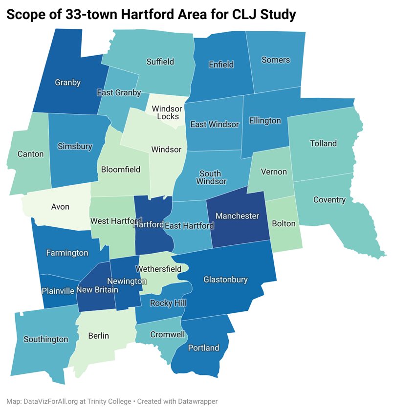

by Emiko Saso
Last updated on 17 November 2022
for Data Visualization for Allwith Prof. Jack DoughertyTrinity College, Hartford CT, USA
How do student enrollment and Per Pupil Instructional Spending in Hartford Region Districts change over time?
Figure 1: Map of Towns in the Hartford Area.
This study looks at two different types of growth in different school districts in the Hartford area: the growth of student enrollment and the growth of per pupil instructional spending. The Report notes from the SYE 2020 data define instruction as “activities dealing directly with the interaction between teachers and students. Teaching may be provided for students in a school classroom or in another location” (Per Pupil Expenditures By Function (District) -Report Notes.). The Report notes also define instruction support services as “activities assisting the instructional staff with the content and process of providing learning experiences for students not reported as Improving Instruction or Library and media service” (Per Pupil Expenditures By Function (District) -Report Notes.).
One might predict that student enrollment growth would be proportional to per pupil instructional spending growth. However, the findings from this study suggest otherwise in the period from school year ending in 2011 to school year ending in 2020. To investigate how the number of students being educated in each district and how per student instruction and instruction support service funding have changed over this decade, we used the percentage changes between the two school years.
Figure 2: Table of Student Population Percent Change. To view a live version visit this link.
To best represent the enrollment data which was found, a table was created which has a column of the school districts, a column of the SYE 2011 student count, a column of the SYE 2020 student count, and a column of bar charts displaying the percentage changes for each district (See Figure 2). The table is also sorted from highest to lowest percentage change and there is a search feature which allows you to search for different districts. In this first table, what stands out is that there are only six school districts for which the percentage change in student population increases and for all other districts it decreases. Of the six school districts where there has been an increase in enrollment count, four of the districts (Achievement Hartford Academy District, Capitol Region Education Council, Odyssey Community School District, and Jumoke District Academy) have a tremendous percentage increase of over 50%. Furthermore, three of these districts (Achievement Hartford Academy District, Odyssey Community School District, and Jumoke District Academy) with the largest increase in student population are charter districts. It is noteworthy as well that all other districts have percentage change values that are less than 10%. However, looking at the numbers more closely from year to year you may notice that some increases are much smaller than others. For example, the Odyssey Community School District increased from only 181 students to 329 students in the last decade while the Capitol Region Education Council had a much larger increase in student count, jumping from 4,646 students to 8,657 students. Still, both districts have similar percent change growths of around 80%.
Figure 3: Table of Instructional Funding Percent Change. To view a live version visit this link.
Where the growth happened in instructional spending was almost the opposite of where the growth happened for student enrollment numbers. Similar to the first table, this second table has a column of the school districts, a column of the SYE 2011 instructional funding amount, a column of the SYE 2020 instructional funding amount, a column of bar charts displaying the percentage changes for each district (the rows also sorted by these values), and a search feature.
In the second table, it can be observed that Achievement Hartford Academy District, Odyssey Community School District, and Jumoke District Academy fall among the four districts with the least percentage change (See Figure 3). Additionally, the Capitol Region Education Council had the largest percentage increase in instructional funding among all the districts. This shows that the percentage change in enrollment numbers is not proportional to percentage change in instructional funding.
Figure 4: Scatter Plot of Instructional Funding Percent Change and Student Enrollment Percent Change. To view a live version visit this link.
In order to explore the relationship between these two variables further, a scatter plot was created. The plot has the student count percentage change on the x-axis, the instructional spending percentage change on the y-axis, and each point represents a different school district (See Figure 4). The plot has four clear outliers which are far from the rest of the data: Capitol Region Education Council, Achievement Hartford Academy District, Odyssey Community School District, and Jumoke District Academy. These findings raise further questions about whether per pupil instructional funding is distributed equitably among students in the Hartford Region.
To see changes in student enrollment over a decade, I chose to gather the data for SYE 2011 (school year ending in) to SYE 2020 from the Edsight Enrollment dashboard. I downloaded the data as two Excel files and imported them into Google Drive. To clean the data, I filtered through using VLOOKUP so that only the Hartford Region districts’ data would be displayed. Then, in a new column, I calculated the percentage change from SYE 2011 to SYE 2020 (Emiko's Build 4 question 1 data). For instructional funding, I used data from the Per Pupil Expenditures Edsight page. I gathered the data from SYE 2011 and SYE 2020 and compiled it into a spreadsheet (Emiko's Build 4 question 2 data). The two tables and scatter plot were all created with DataWrapper. To account for instructional spending, I summed up multiple values from the given data. A note of caution– due to a change in data formatting on the Edsight website from before 2016-2017 to after 2017-2018, column names were different so the Instructional per pupil expenditure for SYE 2011 is made up of “Instructional Staff and Services,” “Instructional Supplies and Equipment,” and “Instruction and Educational Media Services,” while Instructional per pupil expenditure for SYE 2020 is made up of “Instruction” and “Instruction Support Services Values.” Additionally, while the expenditure data from SYE 2020 had a report with specific definitions for instructional funding and other related columns, the expenditure data from SYE 2011 did not have a clear report with definitions for its differing column names.
To read more on school district funding in Connecticut visit DataVizForAll.org/